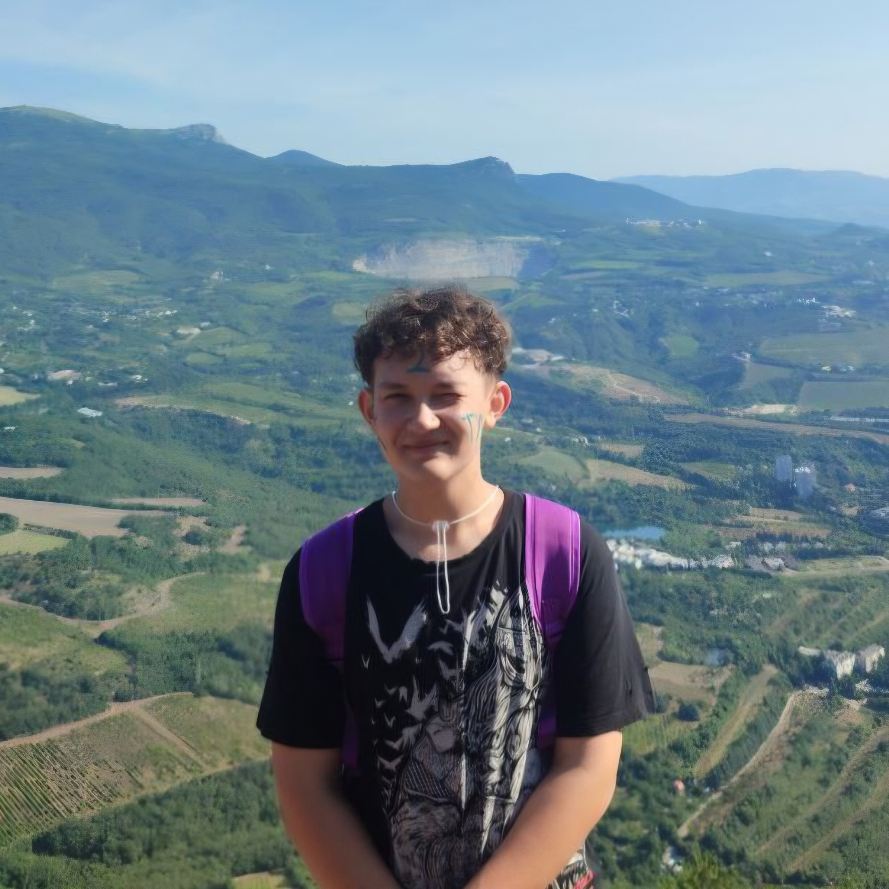

Работа с основным оборудованием
Опыт работы с карабинами, страховками и др,, знание техники безопасности при обращении с ними.
- Навык
- Туристическое снаряжение
- Уровень
- 60%
Путешественник
Я люблю путешествовать (клишейно))).
Моим идейным вдохновителем является мой дядя, который в 30+ лет загорелся идеей альпинизма, нашёл единомышленников и буквально год назад взошёл на Эльбрус!
Мой же путь, как путешественника, начался в старшей школе - с двух поездок в МДЦ "Артек" с интервалом в 1 год. Символично, но оба раза я попадал в профильный туристический отряд (сначала по распределению, потом - по велению сердца).
Аю-Даг (570,8; фото с подъёма см. ниже), Куш-Кая (664,3) - вот список вершин Южного Берега Крыма, покорённых мной. Тогда я и понял, что никакие моря и океаны не займут в моём сердце такое место, какое занимают горы.
Своим незакрытым гештальтом я считаю Розу Пик (2320, недалеко от г. Сочи). Я очень хотел взойти туда пешим ходом, но по некоторым обстоятельствам пришлось подниматься на фуникулёрах по канатной дороге. Через несколько лет эта вершина обязательно поддастся моим двоим, и мои глаза снова увидят те завораживающие пейзажи Кавказских гряд, внизу - облака, а впереди - извилистую дорогу к парку водопадов "Менделиха".

Опыт работы с карабинами, страховками и др,, знание техники безопасности при обращении с ними.
Восьмёрка, австрийский встречный, прямой, встречный, грейпвайн и др.
Булинь, удавка, карабинная удавка, штыки и др.
Общение и решение бытовых вопросов в поездках.
В хронологическом порядке:
2
страны посещены
13
городов исследовано
69
кадров в архиве